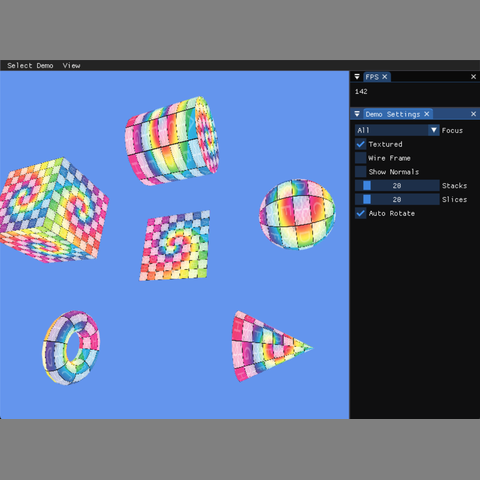

3D Graphics

This project implements procedural mesh generation for several common 3D primitives, including a plane, cube, sphere, torus, cylinder, and cone. The goal was to generate geometry directly in code by creating vertex positions, normals, UV coordinates, and index buffers, then display the results in an interactive OpenGL/WebGL demo.
The demo allows users to view the generated models with texture mapping, wireframe rendering, and normal visualization. It also includes controls for changing the number of stacks and slices so the mesh resolution can be inspected in real time.
meshes.The most important part of this assignment was understanding how a mesh is built from structured vertex data and triangle indices. I first implemented the reusable grid index buffer, then used the same stack and slice pattern to generate different shapes. This made the implementation more consistent across the sphere, torus, cylinder, and cone.
One challenge was keeping the winding order, normals, and UV coordinates correct for each primitive. The cylinder and cone caps required special care because incorrect triangle ordering can cause faces to disappear when back-face culling is enabled. Through this project, I became more comfortable with procedural geometry, normal generation, texture coordinate mapping, and debugging mesh topology visually through wireframes and normal lines.